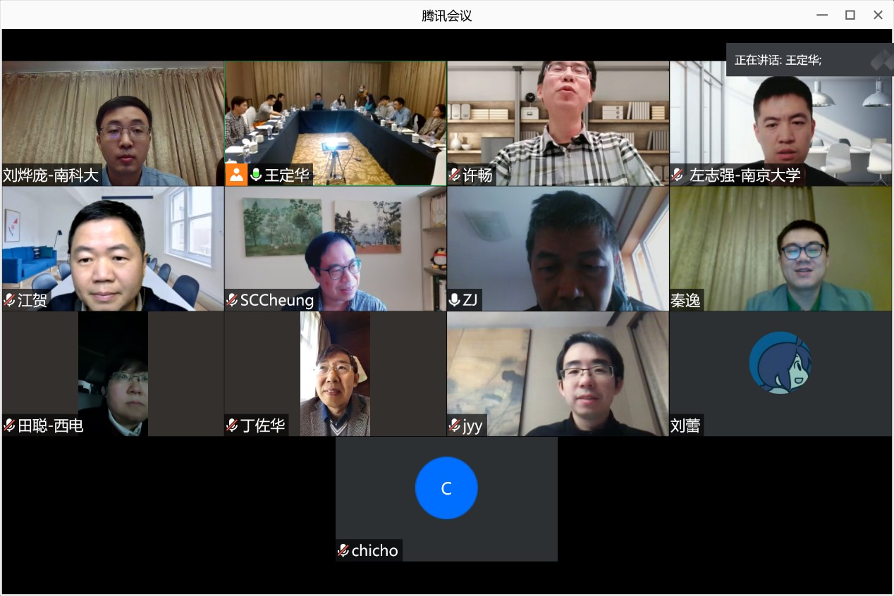
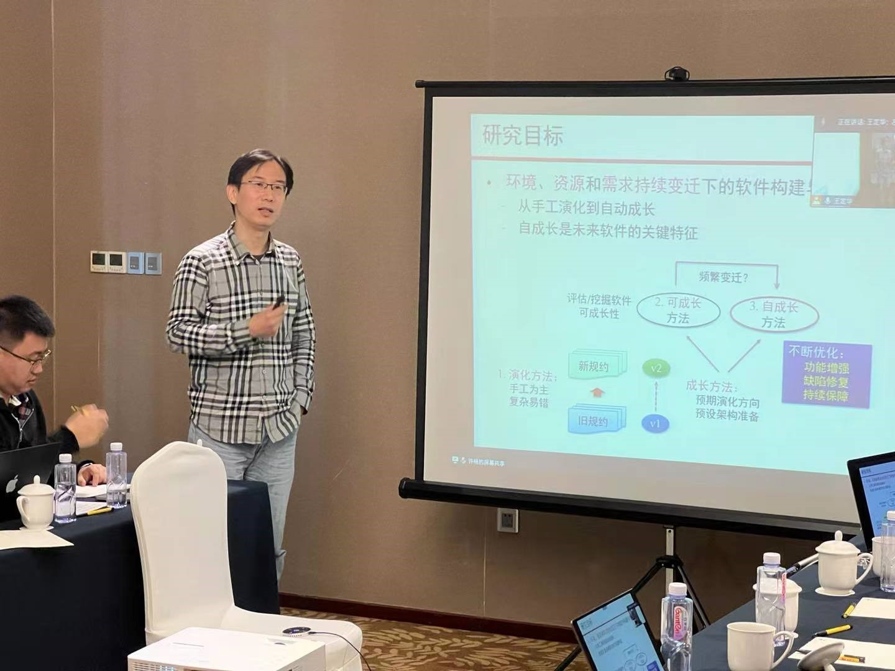
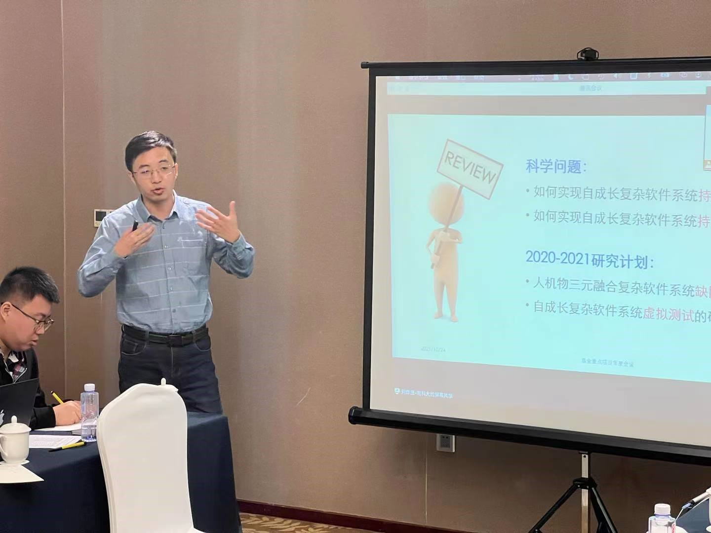

项目阶段进展研讨会在南方科技大学召开
2021年11月3日
2021年10月24日，国家自然科学基金重点项目“自成长复杂软件系统构建方法与运行支撑研究”项目阶段进展研讨会在深圳南方科技大学召开。首先，南京大学秦逸助理研究员，南方科技大学王斯南研究助理，南方科技大学刘璐同学进行了系列学术报告。之后项目负责人、南京大学许畅教授和左志强副研究员，南方科技大学刘烨庞副研究员，以及广州港科大霍英东研究院张成志教授分别介绍了南京大学团队、南方科技大学团队和广州港科大霍英东研究院团队在软件自成长和持续演化的基础理论、功能增强、程序分析、缺陷修复和非确定分析等方面的研究进展。西安电子科技大学田聪教授，浙江理工大学丁佐华教授，中国科学院软件研究所张健研究员以及大连理工大学江贺教授在线上听取了项目研究进展报告，并就自成长软件的独特性、项目整体落地场景、项目各团队间的工具链集成等提出了意见和建议。全体参会人员就项目后续研讨、项目原型系统集成、以及项目前瞻性研究安排等问题进行了讨论。南京大学蒋炎言助理研究员等也参加了会议。
线下参会人员合影
线上参会人员合影
许畅教授做进展报告
刘烨庞副研究员做进展报告